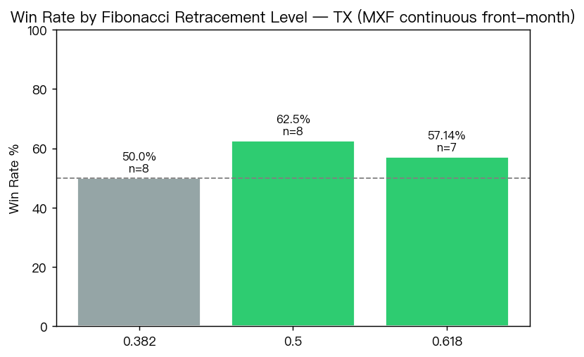

RS-TX-20260728-002 · TX · 2026-07-28
TX annual Jan-open to Jul-1 rally, Fibonacci pullback re-entry
在台指期從一月開盤漲到 7 月 1 日的年份裡，把那一段漲幅的 0.618／0.5／0.382 費波納契回檔價位各自當成獨立進場點（觸價即進場，隔年 3 月 31 日出場），勝率有沒有意義？考慮到可用的日線歷史裡只有大約 13 個候選年份。
Headline Metrics 關鍵數字
Key Findings 重點發現
樣本量本質上就極小（每個價位只有 7 到 8 筆）
可用的日線歷史裡只有 13 個候選年份（2013–2025），每個價位的 95% 信賴區間都寬達大約 30 到 50 個百分點。以下每一個勝率都只能當描述看，不是已驗證的優勢。
在這組小樣本裡，0.5 這一格勝率最高
n=8，勝率 62.5%，獲利因子 3.557——但 n=8 且 95% 信賴區間為 30.57% 至 86.32%，代表這個結果與「丟銅板」到「很強的優勢」都相容。
0.382（最淺的回檔）勝率最弱
n=8，勝率 50.0%——較淺的回檔理應較常被觸及，但在這份資料上它的觸發次數與 0.5 相同（皆為 8 次），而勝率則比兩個較深的價位更接近丟銅板。
By Fibonacci Level 各費波納契價位
三個價位的勝率分別是 50.0%／62.5%／57.14%，但請看 win_rate_ci95_pct 這一欄：三個區間分別寬 57、56、59 個百分點，而且彼此大幅重疊。這代表資料無法分辨哪一格比較好——選 0.5 而不選 0.618 沒有統計依據。

By Retracement Level
| 0.382 | 8 | 4 | 50 | [21.52, 78.48] | 2.158 | 242.55 |
|---|---|---|---|---|---|---|
| 0.5 | 8 | 5 | 62.5 | [30.57, 86.32] | 3.557 | 406.75 |
| 0.618 | 7 | 4 | 57.14 | [25.05, 84.18] | 3.384 | 388.93 |
Year by Year 逐年明細
13 個檢視年份中只有 10 年 qualified（一月開盤到 7 月 1 日確實上漲）——2020、2022、2025 沒有形成那段漲勢，所以完全不進入統計。這張表也顯示每一年三個價位各自算出來的價格，可以看出型態本身長什麼樣。
| 2013 | 7,725 | 7,903 | 2.3 | yes | 7,835 | 7,814 | 7,793 |
|---|---|---|---|---|---|---|---|
| 2014 | 8,646 | 9,380 | 8.49 | yes | 9,099.61 | 9,013 | 8,926.39 |
| 2015 | 9,243 | 9,292 | 0.53 | yes | 9,273.28 | 9,267.5 | 9,261.72 |
| 2016 | 8,095 | 8,623 | 6.52 | yes | 8,421.3 | 8,359 | 8,296.7 |
| 2017 | 9,266 | 10,252 | 10.64 | yes | 9,875.35 | 9,759 | 9,642.65 |
| 2018 | 10,626 | 10,677 | 0.48 | yes | 10,657.52 | 10,651.5 | 10,645.48 |
| 2019 | 9,759 | 10,766 | 10.32 | yes | 10,381.33 | 10,262.5 | 10,143.67 |
| 2020 | 12,045 | 11,544 | -4.16 | no | — | — | — |
| 2021 | 14,641 | 17,646 | 20.52 | yes | 16,498.09 | 16,143.5 | 15,788.91 |
| 2022 | 18,270 | 14,175 | -22.41 | no | — | — | — |
| 2023 | 14,120 | 16,787 | 18.89 | yes | 15,768.21 | 15,453.5 | 15,138.79 |
| 2024 | 17,871 | 22,993 | 28.66 | yes | 21,036.4 | 20,432 | 19,827.6 |
| 2025 | 23,025 | 22,352 | -2.92 | no | — | — | — |
詮釋與實務意義
這份研究最誠實的地方是它自己第一條就寫明了結論不成立：**每個價位只有 7 到 8 筆交易，95% 信賴區間寬達 30 到 50 個百分點**。0.5 這一格勝率 62.5% 看起來最好，但它的區間是 30.57% 到 86.32%——這個範圍同時容得下「跟丟銅板一樣」和「很強的優勢」，所以它分不出任何東西。 有一件事比表面數字更值得注意：**實際樣本比「13 個候選年份」還要小**。2013 到 2025 這 13 年裡，真正符合條件（一月開盤到 7 月 1 日確實上漲）的只有 **10 年**——2020、2022、2025 三年根本沒有形成那段漲勢。在這 10 年裡，0.382 與 0.5 各被觸及 8 次、0.618 被觸及 7 次。所以 n=8 不是「13 年裡有 5 年沒觸價」，而是「先少掉 3 年沒資格，剩下 10 年裡再少掉 2 年沒觸到」。 ⚠️ 另外一處與本頁「重點發現」措辭不符：發現三把 0.382 稱為「最常被觸及的價位」，但實際觸發次數是 0.382 與 0.5 **同為 8 次**，並非 0.382 最多。「最淺的回檔比較常被觸及」在直覺上合理，在這份資料上沒有呈現出來——差別小到被樣本量吃掉了。 實務上的讀法：這份研究可以拿來理解「這個型態長什麼樣、歷史上發生過幾次」，不能拿來決定要在哪一格進場。三個價位的信賴區間彼此大幅重疊，選 0.5 而不選 0.618 在統計上沒有依據，只是這一小組樣本剛好這樣排。
限制與注意事項
- 每個價位只有 7 到 8 筆交易，95% 信賴區間寬達 30 到 50 個百分點。三個價位的區間彼此大幅重疊，因此無法據以判斷哪一格比較好。
- 13 個檢視年份中只有 10 年真正符合條件（2020、2022、2025 沒有形成一月到七月的漲勢），所以有效樣本比「13 年」給人的印象更小。
- 這是一次性的型態研究，不對應任何既有的規範章節；完整的方法推導在該研究自己的決策紀錄裡。
- 進場假設為觸價即成交，出場固定在隔年 3 月 31 日。沒有計入滑價、手續費，也沒有測試其他出場時點。
- 使用 MXF 連續近月日線。連續合約在換月處的接續方式會影響跨月與跨年的點數計算，本研究未對此做調整。
- 本研究狀態為 progress，不是 confirmed。